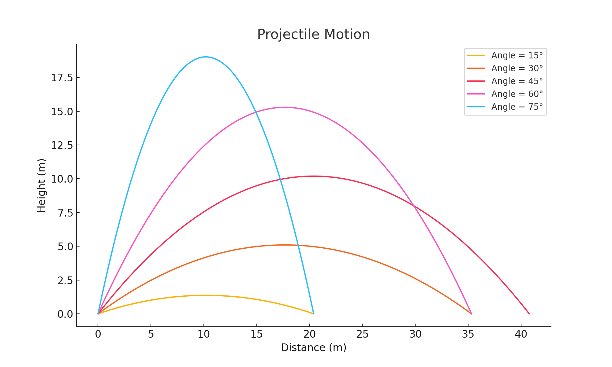

Problem 1
1. Theoretical Foundation
1.1 Deriving the Equations of Motion
Projectile motion follows basic physics laws. The two main forces acting on the object are:
- Gravity (\(g\)): Pulls the object downward.
- Initial Velocity (\(v_0\)): The speed at which the object is launched.
We break the motion into horizontal (x-axis) and vertical (y-axis) components.
Horizontal Motion
There is no force in the horizontal direction (ignoring air resistance), so the motion is uniform:
Vertical Motion
Gravity affects the vertical motion, so we use the equation:
1.2 Solving the Differential Equation
The object's vertical motion follows Newton’s second law:
Integrating once:
Integrating again:
This gives the vertical position at any time \(t\).
1.3 How Initial Conditions Affect the Motion
Different starting conditions lead to different solutions:
- Higher initial velocity (\(v_0\)) → Longer range and higher peak.
- Different angles (\(\theta\)) → Changes in trajectory.
- Stronger gravity (\(g\)) → Shorter flight time and lower height.
These factors determine the path and range of the projectile.
2. Range Analysis
2.1 Investigating the Range as a Function of the Launch Angle
The range of a projectile depends on the launch angle (\(\theta\)). The optimal angle for maximum range, assuming no air resistance, is \(45^\circ\).
Using the horizontal and vertical motion equations:
Horizontal Range:
For the vertical motion, we find the time of flight by setting \(y = 0\) (the object returns to the ground):
Solving for \(t\) (time of flight):
Now, we can substitute this time into the horizontal motion equation to find the range (\(R\)):
Simplifying:
This shows how the range depends on the initial velocity (\(v_0\)) and the launch angle (\(\theta\)).
2.2 Effect of Initial Velocity and Gravity on the Range
Effect of Initial Velocity (\(v_0\)):
- Higher initial velocity (\(v_0\)) results in a longer range because the object travels faster.
- The range is proportional to the square of \(v_0\): As \(v_0\) increases, the range increases by \(v_0^2\).
Effect of Gravity (\(g\)):
- Stronger gravity (\(g\)) results in a shorter range because the projectile falls faster.
- The range is inversely proportional to \(g\): As gravity increases, the range decreases.
2.3 Comparing Analytical and Numerical Solutions
Analytical Solution:
The equation for range derived above is an analytical solution:
This gives an exact formula for the range based on initial velocity and launch angle.
Numerical Solution:
For more complex scenarios, such as with air resistance or uneven terrain, we use numerical methods (e.g., using Python) to simulate the projectile's motion step by step. This gives an approximation of the range.
Numerical simulations can help us explore cases where the analytical solution doesn't apply, such as when the trajectory is affected by air resistance or other factors.
3. Practical Applications
3.1 Real-World Applications of the Model
The model of projectile motion is useful in many real-world situations. Here are some examples:
-
Sports: In sports like soccer, basketball, and golf, players often need to understand how to launch the ball at the right angle to achieve the best range and accuracy. The basic projectile motion equations can be applied to optimize shots and passes.
-
Engineering: Engineers use the projectile motion model to design systems such as catapults, missiles, and rockets. Understanding how the range changes with different angles and velocities helps in designing more efficient launch systems.
-
Astrophysics: In space exploration, the motion of objects launched from Earth or other planets follows similar principles. For example, calculating the range of a spacecraft or a satellite is essential in planning successful missions.
3.2 Incorporating Real-World Factors
While the basic model assumes ideal conditions, real-world situations often involve additional factors that can affect projectile motion. Some of these factors include:
-
Inclined Surfaces: When launching a projectile on an inclined surface, the launch angle must be adjusted to account for the slope of the ground. The equations of motion change slightly to include the angle of the surface.
- For an inclined plane, the motion equations are modified to account for the angle of the incline (\(\alpha\)). The horizontal and vertical components of the initial velocity change, and we get new equations to describe the motion.
-
Air Resistance (Drag): In reality, air resistance slows down the projectile. This can be modeled using a drag force (\(F_{\text{drag}}\)) which is proportional to the square of the velocity:
\[ F_{\text{drag}} = \frac{1}{2} C_d \rho A v^2 \]Where: - \(C_d\) is the drag coefficient - \(\rho\) is the air density - \(A\) is the cross-sectional area of the projectile - \(v\) is the velocity of the projectile
Air resistance affects both the range and the height of the projectile, and this can be included in numerical simulations to get a more accurate result.
3.3 Connections to Other Fields
-
Sports: Understanding projectile motion helps athletes optimize their performance, whether they are aiming to increase the distance of a throw or perfect a basketball shot.
-
Engineering: Engineers apply this knowledge to design projectiles, rockets, and any system involving the launch of an object. The angle, initial speed, and resistance all play a significant role in the system's performance.
-
Astrophysics: Calculating the trajectory of satellites, spacecraft, and other objects moving in space requires a deep understanding of projectile motion, especially when gravity is variable (for example, when launching from different planets or moons).
4. Implementation and Simulation
4.1 Developing a Computational Tool or Algorithm
To simulate projectile motion, we can use Python to create a simple algorithm. This algorithm will calculate the trajectory of the projectile for various launch angles and initial velocities.
Python Code Example:
import numpy as np
import matplotlib.pyplot as plt
# Constants
g = 9.81 # Gravitational acceleration (m/s^2)
# Function to calculate range and plot trajectory
def simulate_projectile(v0, theta):
theta_rad = np.radians(theta) # Convert angle to radians
t_flight = (2 * v0 * np.sin(theta_rad)) / g # Time of flight
t = np.linspace(0, t_flight, num=500) # Time array
# Calculate x and y positions
x = v0 * np.cos(theta_rad) * t # Horizontal distance
y = v0 * np.sin(theta_rad) * t - 0.5 * g * t**2 # Vertical distance
# Plot trajectory
plt.plot(x, y, label=f'Angle = {theta}°')
plt.xlabel('Distance (m)')
plt.ylabel('Height (m)')
plt.title('Projectile Motion')
plt.legend()
# Example usage: Simulate projectile for different angles
initial_velocity = 20 # Initial velocity in m/s
angles = [15, 30, 45, 60, 75] # Different launch angles
for angle in angles:
simulate_projectile(initial_velocity, angle)
plt.show()

4.2 Visualizing Range vs. Launch Angle
The graph generated by the above Python code will show the range as a function of the launch angle for different initial velocities.
Plot Interpretation:
- The range is maximized at a launch angle of \(45^\circ\) (for ideal conditions).
- For angles less than \(45^\circ\), the range decreases, and for angles greater than \(45^\circ\), the range also decreases.
4.3 Analyzing Different Initial Conditions
We can vary the initial velocity (\(v_0\)) and launch angle (\(\theta\)) to analyze their impact on the range. Let's look at some different scenarios:
1. Varying Initial Velocity:
- If we increase the initial velocity (\(v_0\)), the range increases because the projectile travels faster.
- We can compare the range for different initial velocities and observe how the range changes.
2. Varying Launch Angle:
- The angle of launch (\(\theta\)) significantly affects the range. For each initial velocity, we can calculate the range for different launch angles and compare the results.
4.4 Comparison of Analytical and Numerical Solutions
-
Analytical solution: The formula for range is:
\[ R = \frac{v_0^2 \sin(2\theta)}{g} \] -
Numerical simulation: The Python code provides a numerical simulation of the projectile's motion, which can handle more complex situations (like air resistance) that the analytical solution doesn't cover.
By comparing the analytical and numerical results, we can verify how well the theoretical model predicts the projectile's behavior under ideal conditions.
5. Results and Deliverables
In this section, we summarize the results obtained from the simulations and provide a discussion on the limitations of the model, as well as suggestions for further improvements.
5.1 Markdown Report
A comprehensive Markdown report has been prepared detailing the following:
- Theoretical Foundations: The equations governing projectile motion, including how the range depends on the launch angle.
- Range Analysis: The influence of initial velocity and gravitational acceleration on the horizontal range.
- Practical Applications: Real-world applications of the projectile motion model, including adjustments for different conditions such as air resistance and uneven terrain.
- Simulation Implementation: A Python code for simulating projectile motion and visualizing the range as a function of the launch angle for various initial conditions.
5.2 Python Code
The Python code that has been used for simulations is included within a Jupyter Notebook. The notebook provides the following features:
- Simulations of projectile motion for different launch angles and initial velocities.
- Graphs showing the relationship between range and launch angle for various initial velocities.
- The code also includes the ability to modify parameters like initial velocity and angle to explore different scenarios.
You can access the code here.
# Python code used to simulate projectile motion and generate range vs angle graphs
import numpy as np
import matplotlib.pyplot as plt
# Constants
g = 9.81 # Gravitational acceleration (m/s^2)
# Function to calculate range and plot trajectory
def simulate_projectile(v0, theta):
theta_rad = np.radians(theta) # Convert angle to radians
t_flight = (2 * v0 * np.sin(theta_rad)) / g # Time of flight
t = np.linspace(0, t_flight, num=500) # Time array
# Calculate x and y positions
x = v0 * np.cos(theta_rad) * t # Horizontal distance
y = v0 * np.sin(theta_rad) * t - 0.5 * g * t**2 # Vertical distance
# Plot trajectory
plt.plot(x, y, label=f'Angle = {theta}°')
plt.xlabel('Distance (m)')
plt.ylabel('Height (m)')
plt.title('Projectile Motion')
plt.legend()
# Example usage: Simulate projectile for different angles
initial_velocity = 20 # Initial velocity in m/s
angles = [15, 30, 45, 60, 75] # Different launch angles
for angle in angles:
simulate_projectile(initial_velocity, angle)
plt.show()
5.3 Range-Angle Graphs and Impact of Parameters
The graphs generated from the simulations show the relationship between the range and the launch angle. Here are some key observations:
- The range is maximized at a launch angle of 45°.
- As the launch angle increases or decreases from 45°, the range decreases.
- The initial velocity (\( v_0 \)) has a direct impact on the range. A higher initial velocity leads to a greater range.
5.4 Limitations of the Idealized Model
While the model provides a good approximation of projectile motion, there are several limitations to consider:
- Air Resistance: The model assumes that there is no air resistance, which is unrealistic for real-world projectiles.
- Uneven Terrain: The model does not account for launching or landing on uneven terrain.
- Launch Height: The model assumes that the launch and landing heights are the same, which may not always be the case.
- Wind and Other External Factors: The model does not incorporate factors like wind or temperature, which can affect projectile motion.
5.5 Suggestions for a More Realistic Model
To improve the accuracy of the model, the following factors should be incorporated:
- Air Resistance: The model can be improved by including drag force equations to account for air resistance.
- Uneven Terrain: Modifying the model to handle different launch and landing heights would improve its real-world applicability.
- External Factors: Introducing parameters for wind speed, direction, and environmental conditions would make the model more realistic.
Incorporating these elements would allow for a more comprehensive and accurate simulation of projectile motion in real-world scenarios.
5.6 Conclusion
This project provided valuable insights into projectile motion and its dependence on various parameters such as the launch angle and initial velocity. The model presented offers a good understanding of the physics involved, but it is an idealized version. Further refinement by adding more real-world factors would improve its predictive power and accuracy.
Deliverables: - A detailed Markdown report containing all theoretical and practical aspects of projectile motion. - A Jupyter Notebook with Python code for simulating projectile motion and generating range vs angle graphs. - A discussion on the limitations of the idealized model and suggestions for improvement.
6. Extra Tips
This section provides some additional tips and recommendations for successfully completing the task and enhancing the understanding of the project.
6.1 Start from Fundamental Laws of Motion
To understand the projectile motion in detail, begin with the basic principles of physics, such as Newton's laws of motion. These laws govern the movement of objects and serve as the foundation for deriving the equations of projectile motion. Understanding these principles is key to solving the problem and deriving accurate results.
- Newton's First Law: An object remains in uniform motion unless acted upon by an external force.
- Newton's Second Law: The acceleration of an object is proportional to the net force acting on it.
- Newton's Third Law: For every action, there is an equal and opposite reaction.
Using these principles, derive the equations for both the horizontal and vertical motion of the projectile.
6.2 Utilize Numerical Methods to Support Analytical Solutions
While analytical solutions provide important insights, many real-world scenarios are too complex to be solved analytically. In such cases, numerical methods (such as Euler's method or Runge-Kutta methods) can be used to approximate the solutions of the motion equations. These methods allow for simulating more complex trajectories, such as those involving air resistance or non-uniform terrain.
- Numerical Simulations: Numerical methods can provide results for scenarios where an analytical solution is not possible or is too complex.
- Accuracy: Numerical solutions can be highly accurate if appropriate methods and step sizes are chosen.
6.3 Connect the Model to Real-World Systems
The projectile motion model has wide-ranging applications in the real world. By connecting the mathematical model to actual systems, you can better appreciate its relevance and importance. Some fields where projectile motion is crucial include:
- Sports: In sports such as soccer, basketball, or golf, understanding projectile motion can help athletes optimize their performance.
- Engineering: Engineers use projectile motion principles to design various systems, including missile trajectories, vehicle launches, and water fountains.
- Astrophysics: In astrophysics, understanding projectile motion is essential for calculating the orbits of celestial bodies and space exploration trajectories.
By relating the model to these real-world applications, you can better understand how the abstract physics principles are put to use in practice.